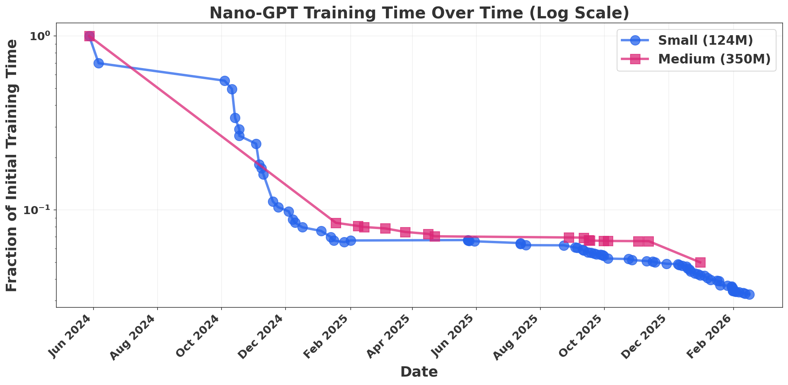
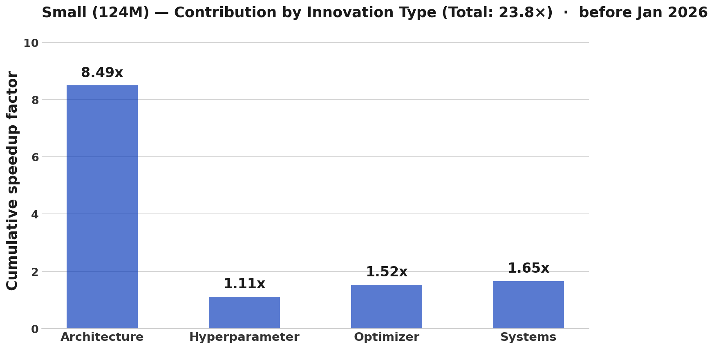
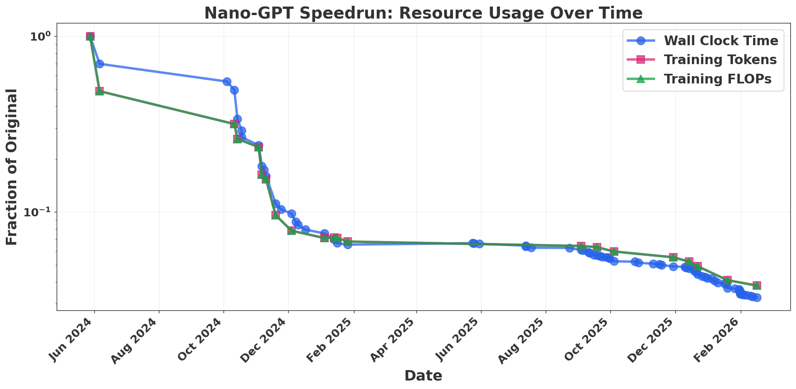
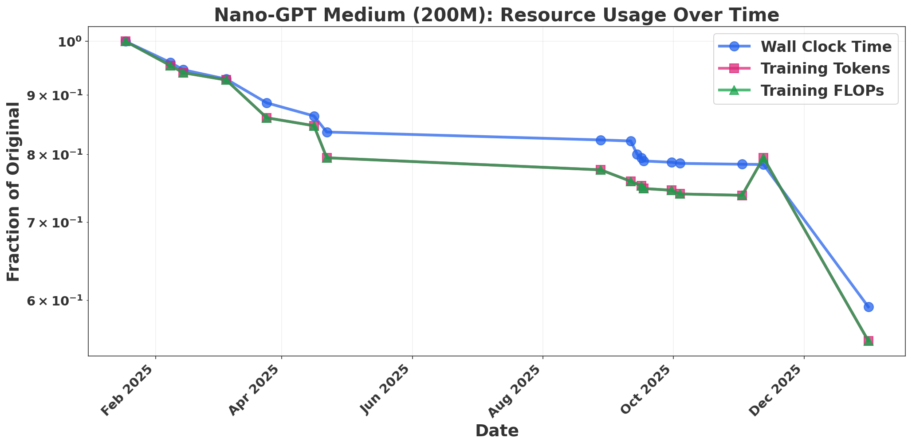
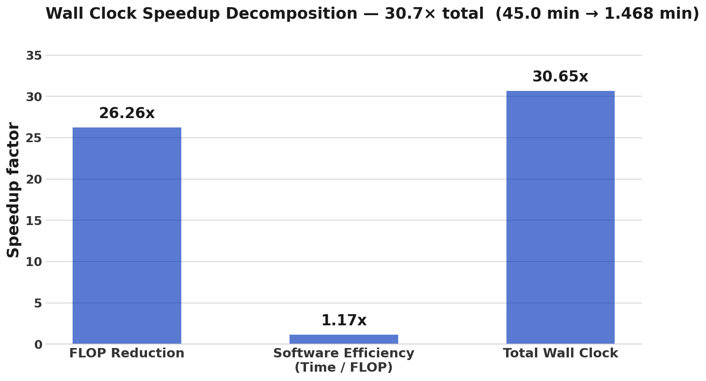
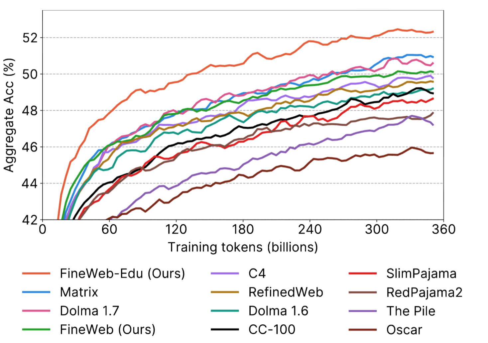
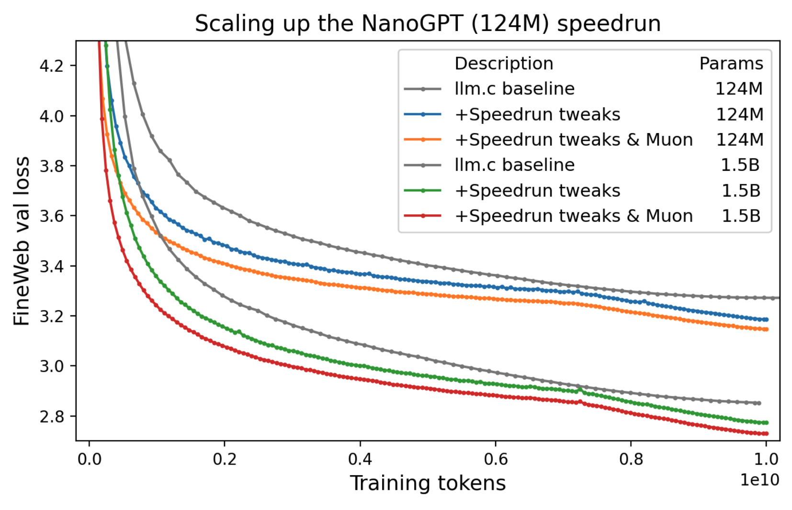
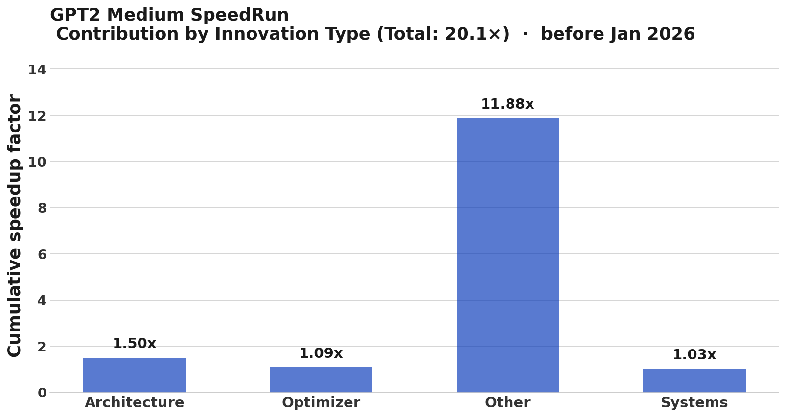
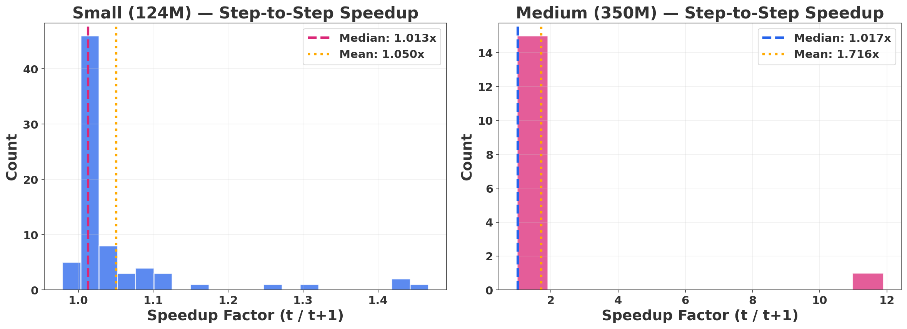

Thanks to Tom Cunningham for inspiring this post. I also want to acknowledge Parker Whitfill's work on NanoGPT and commentary on training-cost progress, and Anson Ho's recent post on this subject, which prompted these discussions. Zachary Brown provided helpful commentary on this manuscript.
Main conclusions
• FLOP improvements track wall-clock time well; software and other non-FLOP improvements look relatively minor in comparison.
• Algorithmic progress (at fixed data and size) is around 1.6× per year. This is smaller than some previous estimates, but fairly close to the overall gains at fixed size measured in our On the Origin of Algorithmic Progress paper.
Anson Ho has recently argued that algorithmic progress—efficiency improvements that reduce the computational cost of training models to a given capability—is the least understood driver of AI advancement. Most of the data on algorithmic progress comes from analyzing papers. In our recent Origins paper, we took a more experimental approach, empirically measuring the impact of discovered algorithms on AI capabilities over the period 2012–2023. We found that efficiency improvements from new algorithmic innovations have larger and larger effects as models scale up in compute.
I like to think of this as the "dark energy" of AI progress: an unseen force that fundamentally shapes the trajectory of the field, and whose influence only grows at larger scales.
In this piece, I measure algorithmic progress using a complementary approach: evaluating the cost reduction AI developers have achieved on the NanoGPT SpeedRun Benchmark. This is a competition to train fixed-loss, fixed-size models at the fastest possible speed. Speedrun competitions like this are a very valuable data source: every record-setting entry is fully documented with architecture, training curves, and wall-clock time, yet they have received little attention in the algorithmic progress literature.
While this benchmark does not capture scale-dependent effects and suffers from benchmark hacking, I think it is a fascinating model organism for algorithmic progress. After analyzing this competition, I compare the results to our Origins paper.
The NanoGPT speedrun benchmark is a collaborative and competitive project aimed at reaching GPT-2 Small validation loss on the FineWebText dataset using 8× H100s as fast as possible. Contributors make updates to the architecture or training procedure, and entries that improve efficiency are considered world record holders.
Entries are required to have active parameter counts of around 124M (with some minor variation), the same order of magnitude as GPT-2 Small. The competition also runs a medium version where most entries use 200M-parameter models (the first entry is 350M parameters). The benchmark has existed since 2024, and the architecture, time, and training curves for every record-setting model are recorded—providing a remarkable chart of algorithmic progress.
For each entry in the benchmark, I asked Claude to categorize each of the innovations mentioned in the entry's record log. Many log updates include multiple innovations—for example, "included flash attention and updated Muon." I asked Claude to choose the single most representative category for each record holder, such as "Architecture," "Optimizer," and so on.
This process is inherently subjective. I spot-checked the classifications against the logs and they seem fair, though borderline cases exist. The classifications are in the GitHub repository, and some record-holding entries likely made advances across multiple categories.
Here, "Architecture" refers to general non-optimizer algorithmic gains such as changing activations, skip connections, and related design choices, rather than broad paradigm shifts like transformers versus diffusion models or recurrent language models.
Overall, architectural improvements appear to play the largest role in speedrun progress.
I've included the breakdown for the medium benchmark in the appendix. Most of the advancement in the medium benchmark came from scaling up the innovations exhibited in the small version. However, this happened in essentially one iteration, so we cannot decompose it cleanly into categories.

A large part of the algorithmic progress literature measures progress at the FLOP, or operation, level. However, it is possible to reduce training time without reducing FLOPs—for example, by increasing GPU utilization or using lower-precision arithmetic. Ultimately, what we care about are metrics like wall-clock time, energy, and cost, rather than FLOPs alone.
Does this mean the algorithmic progress literature has failed to capture real-world progress?
Parker Whitfill has done some initial work suggesting that these non-FLOP improvements are substantial, but still smaller than FLOP improvements. I try to address this more directly by estimating the number of training tokens and training FLOPs used by NanoGPT record holders over time. Methodology and caveats are in the appendix, and more detailed data processing is available on GitHub.
Figure 3 suggests that FLOP improvements track wall-clock improvements well. Non-FLOP improvements seem to play a relatively minor role. Thanks to Tom Cunningham for raising this question.



Taking data from the benchmark as a whole (2024–2026), non-FLOP improvements account for only about a 1.17× factor over the entire benchmark period, with the vast majority of wall-clock reduction coming from FLOP reductions.
However, the baseline llm.c system was built in 2024 with already highly optimized software—kernel
fusion, flash attention, torch.compile, and so on. Perhaps non-FLOP improvements were historically very
important, but by 2024 there was less room left for them.
To estimate the size of these earlier effects, we can compare the cost of training GPT-2 XL in 2019 against Karpathy's 2024 replication:
This seems broadly reasonable. MFU is bounded, and it is hard to identify many other comparable gains over that period. However, the underlying data is noisy: prices and epoch estimates could easily be off by a factor of four, so the residual could range from negligible to reasonably large.
Then why are people investing so much in non-FLOP improvements like flash attention and better parallelism? Much of this class of improvement is enabling rather than directly cost-reducing. These methods make it possible to train much larger models that would otherwise be impractical. Data movement imposes a fundamental limit on the size of language models. Inference scaling is fundamentally limited by KV-cache size and GPU memory. And there are still major systems and utilization challenges in RL training.
NanoGPT progress looks like a good proxy for GPT-2-style progress from 2019 to 2026. The overall change is consistent with a 1.59× FLOP-efficiency gain per year.
This is remarkably close to the estimate in our paper for models using around $10^{18}$ FLOPs, which we interpolate as 1.58× per year from 2012 to 2023 by taking the CAGR implied by a total 155× gain over that period. Note that our paper does not factor in data progress, but it does factor in the switch from Kaplan to Chinchilla scaling, as well as the switch from LSTMs to transformers.
However, there are some inconsistencies. Our experiments predict a gain of 2.85× over the 2019–2023 period. Meanwhile, inferring progress from speedrun statistics yields 6.47×.
My guess is that some of this gap is explained by NanoGPT innovations not scaling to larger models, by over-optimization for the benchmark, and by the inherently high variance of algorithmic progress. But I also think it is likely that we are missing some innovations in that period.
If we factor in data progress—that is, some amalgam of Chinchilla optimality, FineWebText, single-epoch training, and related effects—then total speedrun gains rise by around 10×, from roughly 30× total to around 300× (using the GPT-2 Small multiplier). This implies a CAGR of around 2.2×, which is closer to Ho et al.'s estimate of 2.8× from Algorithmic Progress in Language Models.
"If algorithms are the dark energy, then data is the dark matter."
The NanoGPT speedruns hold data constant, so there is little we can conclude directly about the role of data progress. However, the GPT replication community and Andrej Karpathy's records provide a valuable source for estimating the contribution of data quality.
Karpathy claims that GPT-2 XL was trained on 100B tokens. Karpathy is able to replicate GPT-2 XL's accuracy on HellaSwag with fewer than 30B tokens by training on FineWebText, suggesting an efficiency gain of roughly 3–4×. His GPT-2 Small replication matches the same HellaSwag accuracy with fewer than 10B tokens, suggesting a gain of around 10× relative to the original WebText training.
The effects of data seem highly nonlinear. In fact, data is one of the paradigmatic examples of a scale-dependent innovation.
Still, this is not an entirely fair comparison. GPT-2 was trained for many epochs, while FineWeb replications generally use single-epoch training. Karpathy also trained Chinchilla-optimally, while GPT-2 likely did not. On a fair token-to-token efficiency basis, the gains would be much smaller.
This updates me against a "most progress is data progress" view, and toward a view closer to: it is not the data, but how you use it. If OpenAI had scaled their dataset to the same size, avoided redundant multi-epoch training, and known the optimal dataset size, they might have trained GPT-2 much more efficiently without improving the underlying information density of the dataset itself.
An important caveat is that these efficiency gains are measured on HellaSwag, a specific benchmark. As Steven Byrnes has noted, the gap between completion-based metrics like perplexity or HellaSwag and other benchmark-specific measures of data quality could be substantial.

In our paper, we find that large-scale architectural changes and scaling practices can have substantial scale-dependent efficiency gains. However, the vast majority of algorithmic changes do not have scale-dependent effects.
None of the algorithms in the speedrun clearly fall into this strongly scale-dependent bucket, and we do not see especially strong scale dependence in the NanoGPT data. Algorithmic gains for the small and medium speedruns look remarkably similar. Interestingly, in NanoGPT we see slightly stronger algorithmic gains in smaller models. Keller Jordan, NanoGPT speedrun founder, mentions that some of these innovations explicitly are not likely to scale.
Importantly, these may be what my colleague Zachary Brown calls scale-specific effects. These are not gains that steadily increase or decrease with size, but rather hacks that work only at a particular scale—for example, hyperparameter tuning tricks or specific learning-rate adjustments.
Our study only measures changes that have increasing scale-dependent effects. This is partly a selection effect, because we chose improvements that were historically most important. Thanks to Anson Ho for pointing this out.

NanoGPT progress will not continue indefinitely. Speedruns and other tightly constrained algorithmic tasks eventually hit limits. But progress has recently sped up, and it seems entirely possible that training FLOP and sample efficiency could improve by several more orders of magnitude before plateauing, certainly if larger architectural changes are allowed. The benchmark measures kernel warmup and data loading, which may become more important as the benchmark timeframes shorten. Therefore in the future, in order to generalize, it will be important to measure FLOPs and sample efficiency rather than time per se.
However, other mechanisms besides pretraining enhancement may become the dominant form of algorithmic progress. Inference scaling along with algorithmic inference progress offers a viable direction. I worked on another paper measuring inference-side efficiency gains here. I think measuring RL training efficiency, thinking/inference efficiency, and organization efficiency at the level of a society of agents will become more important metrics. Human history is more of a story of our organizational productivity changing rather than our biological learning ability, and AI progress could follow a similar trajectory. Nevertheless, understanding pretraining gains gives us some broader insights into AI innovation and these higher-level domains.
For all its faults, NanoGPT provides an exciting view of innovation. Progress may be dominated by changes at the largest scales, but there are still remarkable lessons to be learned at the small scale.
A Cloud TPU v3 device delivered roughly 420 TFLOP/s (Google, 2019) at an on-demand rate of $8/hr (Google Cloud TPU pricing). An H100 delivers ~1,979 TFLOP/s (NVIDIA, 2023) at ~$3.44/hr (Lambda, 2024). This implies a cost per peak FLOP improvement of approximately 11× over the period from 2019 to 2024.
From Epoch's model database:
Estimating based on:
A 40GB dataset is approximately 8 billion words, or:
The number of epochs is not reported, but:
12 epochs is the modal, most credible value. The mean of the probability mass is probably around 20 epochs, so calculating from that value:

